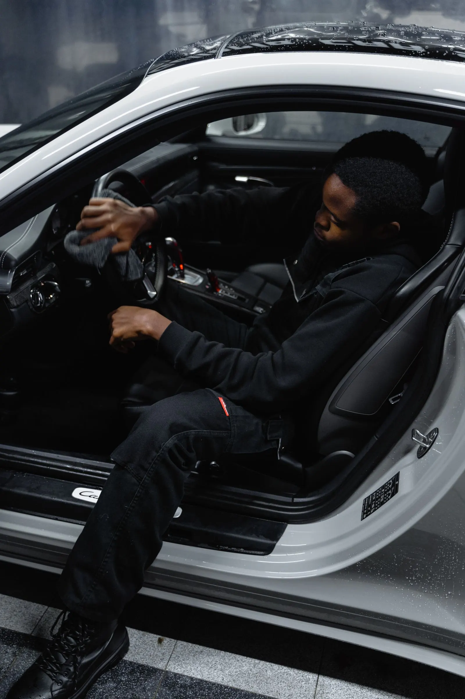
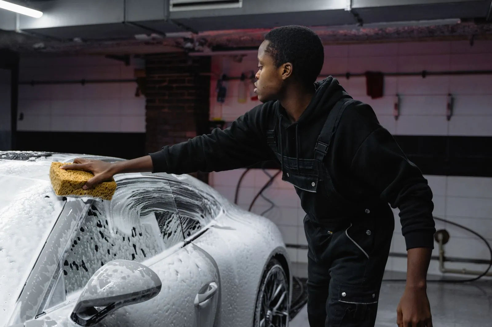
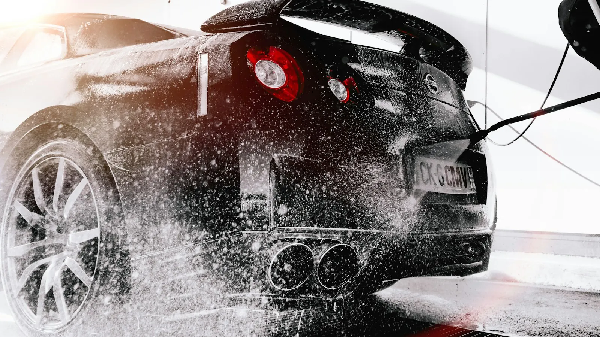
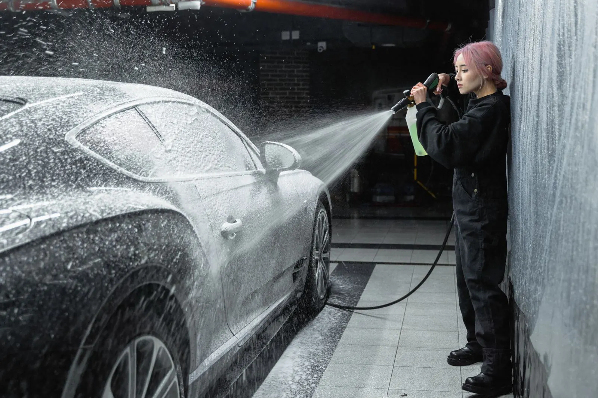
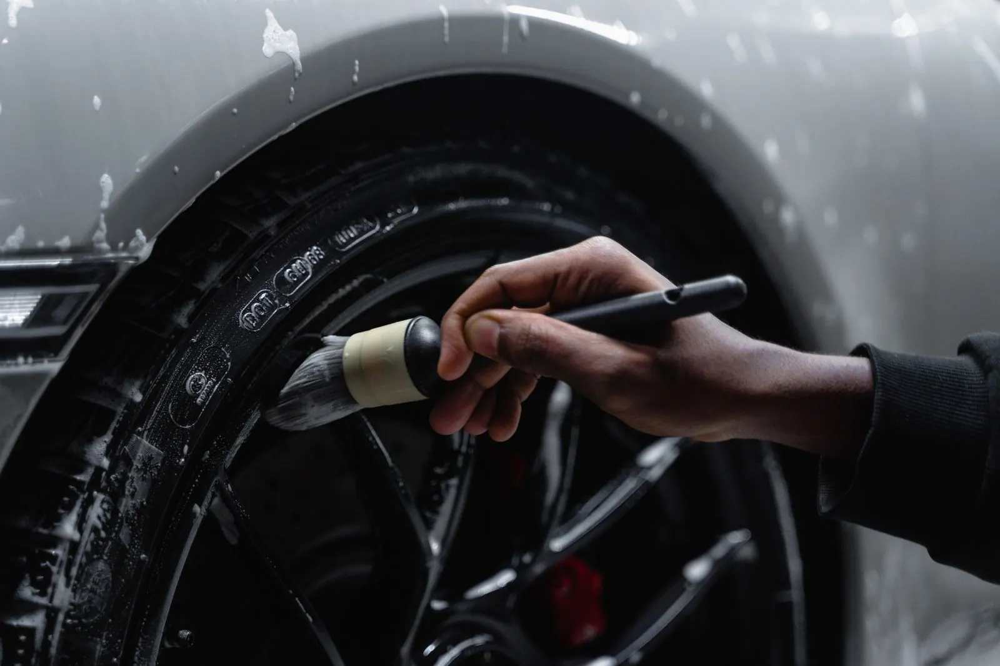
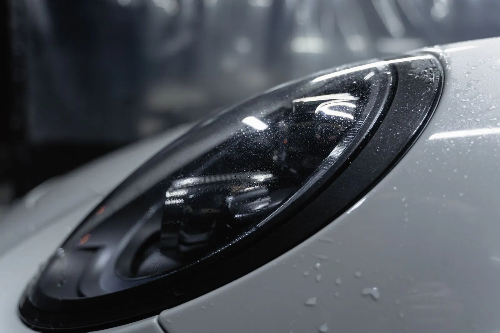

01
Je eigen wagen
Zetels, matten, dashboard, ruiten, lak en velgen. Je stapt weer in een auto waar je zin in hebt, met dat frisse gevoel van de eerste dag.
Achter SWASH zit Steven. Hij poetst je wagen binnen en buiten, met de hand en zonder haast. Je eigen auto, een wagen die klaar moet voor de verkoop of een paar bestelwagens van de zaak: alles krijgt dezelfde aandacht.

Geen wasstraat, geen borstels die krassen achterlaten. Elke wagen gaat stap voor stap door Stevens handen, van de matten tot de velgen.

Zetels, matten, dashboard, ruiten, lak en velgen. Je stapt weer in een auto waar je zin in hebt, met dat frisse gevoel van de eerste dag.
Een koper beslist bij de eerste blik. Een wagen die er verzorgd bij staat, vertelt meteen dat er goed voor gezorgd is. Steven maakt hem klaar voor de foto's en de bezichtiging.
Bestelwagens en bedrijfsauto's, binnen en buiten. Ook als het er meerdere tegelijk zijn. Je team rijdt weer rond met wagens die passen bij hoe jullie werken.

"Hij neemt zijn tijd en let op de kleine details. Daardoor zag mijn auto er weer als nieuw uit."Uit een Google-review
Zeg wat voor wagen het is en wat er moet gebeuren. Een paar foto's helpen om in te schatten hoeveel werk erin zit.
Van maandag tot zaterdag, van 's morgens vroeg tot 's avonds laat. Er is bijna altijd een moment dat in je week past.
Eerst binnen, dan buiten. Hij werkt met de hand en neemt de tijd die je wagen nodig heeft, ook als dat wat langer is dan gedacht.
En dan zie je het verschil. Proper tot in de hoeken waar je zelf nooit aan toe komt.



Gemiddelde op Google, uit 28 reviews
"Ik heb mijn wagen aan hen toevertrouwd voor de verkoop. De communicatie liep van in het begin vlot en de afspraak was snel geregeld, op het moment dat het mij paste. Ik kreeg mijn auto terug alsof hij nieuw was. Het verschil tussen voor en na is opvallend!"
Google-review"Swash heeft 4 grote bedrijfswagens binnen en buiten perfect gereinigd. Alles werd met de grootste zorg behandeld en de wagens zien er als nieuw uit! Uitstekend werk en een professionele aanpak 👍"
Google-review"Uitstekende service! De auto is tot in de perfectie gereinigd, hij is weer als nieuw 🤩 Een echte topper!"
Google-reviewStuur Steven een berichtje of bel gewoon even. Hij laat je snel weten wanneer je terechtkunt.
| Maandag | 8u tot 21u30 |
| Dinsdag | 8u tot 21u30 |
| Woensdag | 8u tot 21u30 |
| Donderdag | 8u tot 21u30 |
| Vrijdag | 8u tot 21u30 |
| Zaterdag | 8u tot 21u30 |
| Zondag | Gesloten |
Albrecht Rodenbachlaan, 8501 Kortrijk
Route plannen →
Ik maakte deze demo voor jullie om te tonen wat er kan. Na een kort gesprek maak ik er iets veel persoonlijkers van, helemaal naar jullie wens.
Vrijblijvend. Ik kom langs of we bellen.
Op maat, op jullie eigen domein.
Geen voorschot. Jullie betalen pas als alles klaar is.
Hosting, domeinnaam en kleine wijzigingen, zoals nieuwe openingsuren.
Omdat een voorbeeld meer zegt dan een mail. Zo zien jullie meteen wat er kan, en het kost jullie niets.
Nee. Het gesprek is vrijblijvend. Vinden jullie het niks, dan is het daarmee gedaan.
Na ons gesprek staat jullie site binnen 10 tot 14 dagen online.
Zeker. Jullie domeinnaam kan gewoon blijven, de nieuwe site komt in de plaats van de oude.
Nee, dat doe ik op basis van ons gesprek. Eigen foto's zijn mooi meegenomen, maar niet nodig om te starten.